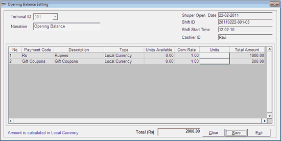

This option allows you to set the opening balance for a Till. If multiple currencies are catalogued in Shoper 9, you can set currency wise opening balance for a Till. Additionally, you are allowed to set the opening balance with any payment mode catalogued in Shoper 9, if configured in the template.
Note: For a particular Shift ID, you can set the opening balance only once.
How to reach: Cash > Till Management > Set Opening Balance
The Opening Balance Setting window is displayed.

Terminal ID: Displays the terminal ID (node ID) of the Till.
Narration: Enter appropriate narration regarding the activity.
Shoper Open Date: Displays the current Shoper date.
Shift ID: Displays the current Shift ID of the Till.
Shift Start Time: Displays the start time of the current shift.
Cashier ID: Displays the user ID (login ID) of the cashier who opened the current shift.
Opening Balance Setting Grid
By default, the details of the cash payment mode, as catalogued in Shoper 9, are displayed in the grid. The remaining payment modes catalogued in Shoper 9 will be available in the grid, if configured in the Shoper template.
The details like payment code, description and currency type (whether local or foreign currency) as catalogued in Shoper 9 are displayed in the respective columns.
Note: If multiple currencies are catalogued in Shoper 9, the details of the individual currencies are displayed separately.
Units Available: Displays the units of the payment mode available as opening balance, if set already. When you are setting the opening balance for the first time, this field will be set to zero.
Conv. Rate: Displays the rate at which the payment mode will be converted to the local currency as defined in the payment mode catalogue.
Units: In this field, you have to enter the units of the payment mode to be transferred. If multiple currencies are catalogued in Shoper 9, you can enter the units of each currency type, as per requirement. You can enter the units under each payment mode with denominations, if configured.
The button in the Units column indicates that the units needs to be entered denomination wise.
Note: If denomination details are not applicable, you can enter the total units of the payment mode in the Units column.
Total Amount: Displays the total amount set as the opening balance with the payment mode. The Total Amount for each payment mode is calculated as:
Total Amount = Units of the payment mode * Conversion Rate
The total amount of each payment mode is calculated in the local currency.
Total (Rs): Displays the total amount set as the opening balance for the current Shift ID. This amount is the total of all the values in the Total Amount column.